Friendly Snippets
She came in through the bathroom window 1
彼女は浴室の窓から入ってきた
何者かがぬるっと入って来ましたが、そんな状況に反してFriendly Snippetsは文字通りとっても friendly です❗
斬らないでください😶🌫️ 気楽にいきましょう❗
Snippets collection for a set of different programming languages.
様々なプログラミング言語のためのスニペット集です。
The only goal is to have one community driven repository for all kinds of snippets in all programming languages, this way you can have it all in one place.
唯一の目標は、あらゆるプログラミング言語のあらゆる種類のスニペットを集めたコミュニティ主導のリポジトリを1つ持つことです、 そうすることで、一か所ですべてを手に入れることができるのです。
リポジトリを見てもわかる通り、friendly-snippets自体はluaのコードを持ってないんですね😮
もうほんとに純粋なスニペット集です😊
Install
これ、実際は次の項で行うpathsで認識させればいいだけなので、packerには更新管理だけを行ってもらいます😺
use {
'hrsh7th/nvim-cmp',
config = function() require 'extensions.nvim-cmp' end,
requires = {
'hrsh7th/cmp-nvim-lsp',
{
'L3MON4D3/LuaSnip',
tag = "v1.*",
run = 'make install_jsregexp',
config = function() require 'extensions.luasnip' end,
- requires = 'saadparwaiz1/cmp_luasnip',
+ requires = { 'saadparwaiz1/cmp_luasnip', 'rafamadriz/friendly-snippets' },
},
},
}
Protected by a silver spoon 2
銀の匙に守られながら
Setup
packerを使用して取得されたのであれば、当然packerの管理下に配置されます。
パスはちょっと複雑ですね😅
require('luasnip.loaders.from_vscode').lazy_load {
paths = {
vim.fn.stdpath('data') .. '/site/pack/packer/start/friendly-snippets',
'./snippets',
},
}
Didn't anybody tell her?
Didn't anybody see?
誰も教えてあげなかったの？
誰も気づいてないの？
Using
ここでは気分転換にhtmlを開いてみました🐙
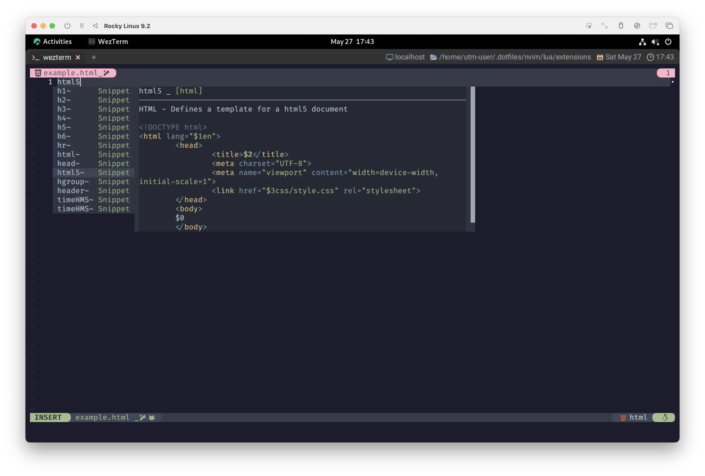
ほら❗一目でわかるすっごいやつやん👺
Sunday's on the phone to Monday
Tuesday's on the phone to me
日曜の事は月曜に電話する
火曜の事は僕にかかってくる
Super-Tab
...と、いうことでSuper-Tabを実践・活用できるコレクションが手に入りました❗
満を持してLuaSnipのKeymapsで説明を後回しにしていたSuper-Tabに触れていきます🏄♀️
nvim-cmp's wiki also contains an example for setting up a super-tab-like mapping.
nvim-cmp の wiki には、super-tab のようなマッピングを設定する 例も紹介されています。
じゃあ、また適当なluaファイルを開いて、
今度はfor~のスニペットを選んでみましょう。(スクリーンショットで言うと、4番目にいるやつです。)
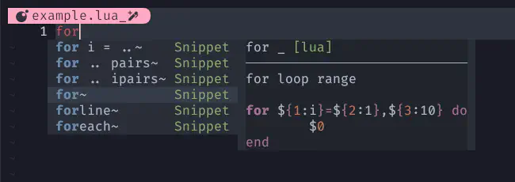
"i" の部分にカーソルが進みましたね。モードがSELECTとなっているのもポイント❗
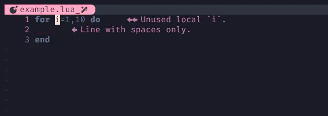
VISUALモードじゃないぞ😉❤️
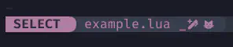
書き換え前の変数が "i" なのでややこしいんですが...、 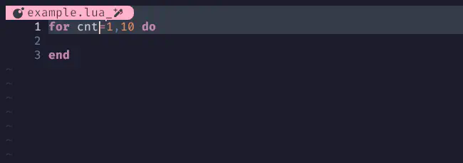
iを押さなくても、そのまま入力を開始すれば勝手にINSERTモードに切り替わります🐬
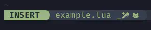
書き換えたらINSERTモードのままTabをポチッとすると次に進みます。
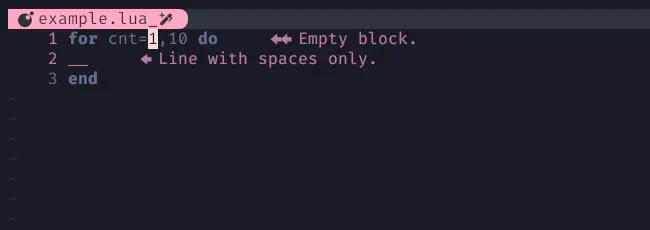
繰り返していくと... 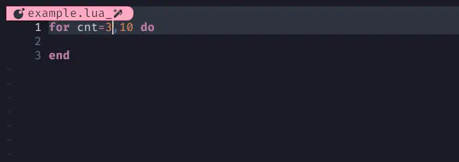 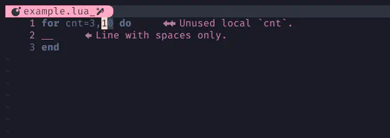 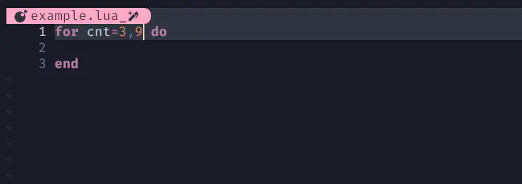
あ、なんか "中身も書けや" と言われているかのようですね😮 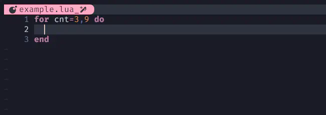
書きました😆 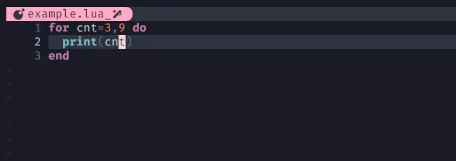
カ キ マ シ タ ァ❗❗
こんなんで伝わったかな...👮♀️
And so I quit the police department
And got my self a steady job
だから僕は警察を辞めた
それで安定した仕事に就いたんだ
I'll take you all.
自分で育ててないわたしが言うのもあれですが、スニペットはNeovimに限らずどこでも使えます🦉
今回使用したのはVS Code-likeのスニペットです。これ大事❗覚えといてね🤗
And though she tried her best to help me
She could steal, but she could not rob
僕を助けようと 彼女は頑張ってくれたけど
こっそり盗むことはできても、強引に奪うことはできないんだね
1: She came in through the bathroom window (by The Beatles): 歌詞の内容は、McCartney の留守中にファンが自宅に忍び込むというエピソードが元になっている。 また、"So I quit the police department (だからぼくは警察署を辞めた)" というフレーズは、 1968年10月に後に McCartney の妻となる Linda Eastman と娘・Heather と共にタクシーで John F.Kennedy 国際空港に向かっていたときに見た、 「ユージン・クイッツ、ニューヨーク警察署」と記された身分証明パネルから触発されたもの。 このフレーズについて McCartney は 「そこが無作為の素晴らしさ。もし僕があの男のタクシーに乗っていなかったら、この曲はずいぶんと違っていたと思う」と語っている。 本作のタイトルについて、John Lennon は「1968年5月にニューヨークを訪れた時に泊まっていたフラットで、 Paul がふと "She Came In Through The Bathroom Window (彼女は浴室の窓から入ってきた)"というフレーズを口にした。 つまりあのフレーズは何年も前からあるわけで、それをやっと仕上げたわけだ」と語っている。 Wikipediaより
2: 「このフレーズは、彼女が裕福な家庭や特権階級に生まれたことを指しています。
一般的な意味では、"born with a silver spoon in one's mouth"というフレーズは、特権階級に生まれた人々を表現する際に使われることがあります。
歌詞では、彼女が窃盗や侵入の行為を行い、それが裕福な家庭や特権的な環境に反するものであることを描写しています。
"Protected by a silver spoon"というフレーズは、彼女が裕福な出自によって守られているという皮肉めいた意味合いを持っています。
ただし、歌詞の具体的な意図や背景は、曲の作者であるポール・マッカートニーに尋ねることが必要です。」ChatGPTより
...。...はっ❗Bathroom windowからぬるっと入って尋ねればいいんだ🤣 ...んなアホな🙄